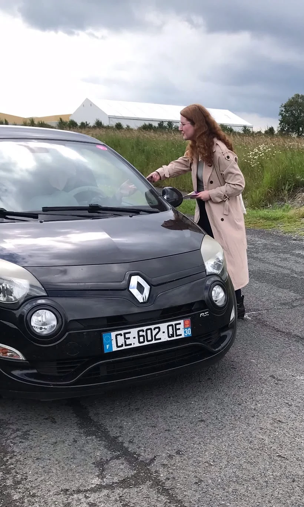
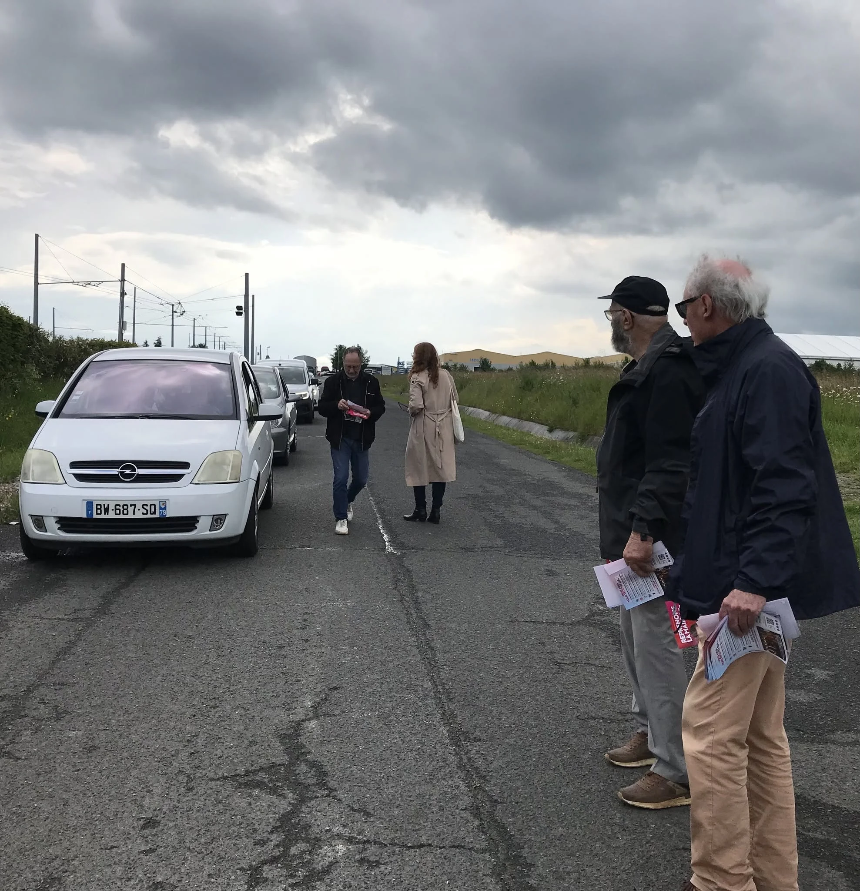

Compte rendu relayé
Européennes. Distribution de tracts chez Heuliez Bus
Date de mise à jour indiquée par Facebook · 22 mai 2024
Repères éditoriaux
Le reportage photographique accompagne la publication d’Élisabeth Jutel sur la rencontre avec les salariés d’Heuliez Bus.
Texte de la publication · Élisabeth Jutel
Candidate de la Gauche Républicaine & Socialiste aux #Européennes2024 sur la liste #GaucheUnie menée par Léon Deffontaines, j'étais hier avec les amis du PCF - Parti Communiste Français PCF 79 - Parti Communiste Français fédération des Deux-Sèvres de Bressuire et Thouars à la sortie de l'usine Heuliez Bus. Excellent accueil.
#factures #energie #PouvoirDAchat #servicespublics
https://deffontaines2024.fr


Sources
Élisabeth Jutel · publication relayée par le PCF 79 · bibliothèque Facebook · AR-0002-FB-01384
À lire aussi · La campagne européenne sur les marchés de Thouars et Bressuire